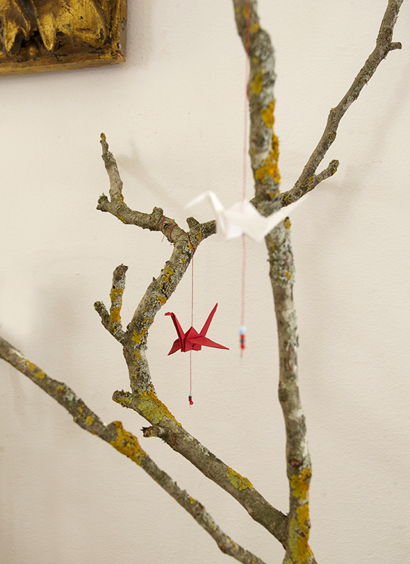
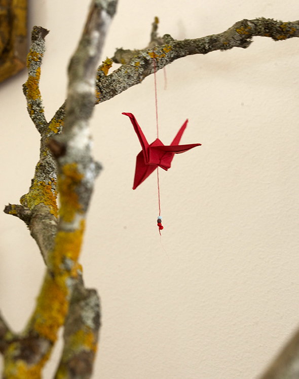
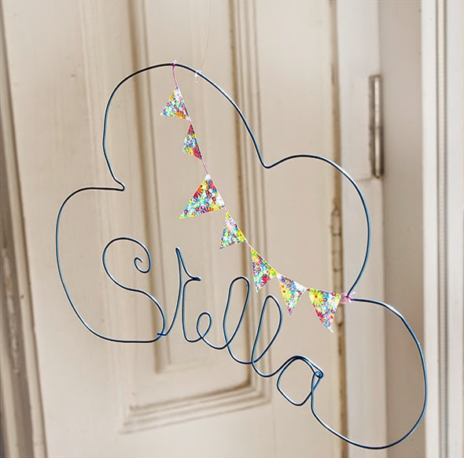
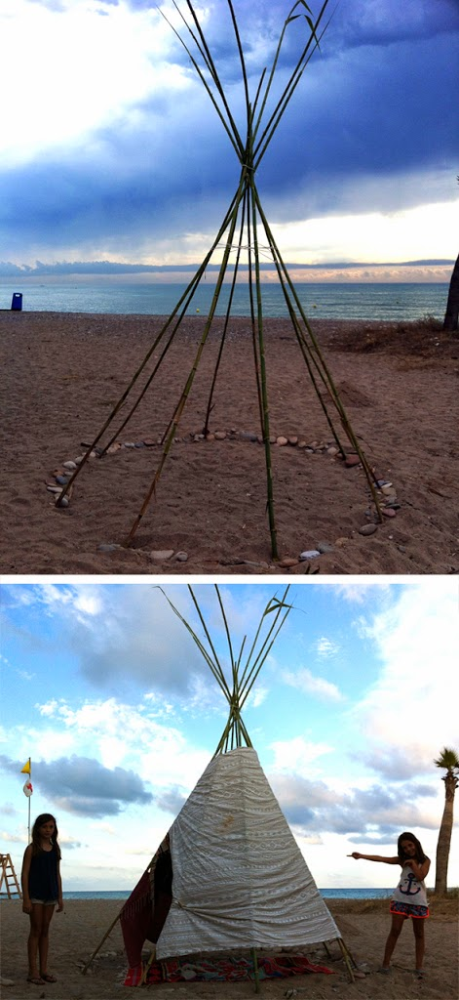
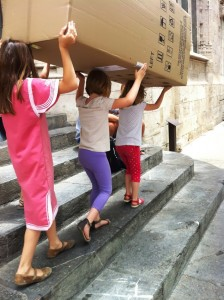

Nature gives us everything!
La naturaleza nos da todo!
Die Natur gibt uns Alles!



Nature gives us everything!
La naturaleza nos da todo!
Die Natur gibt uns Alles!

A cloud of wire. The pennants are made of washi tape, folded over a thread and then cut the shape. Una nube de alambre. Los banderínes…
Read more →
To increase our Lego collection we've built some cardboard Star Wars spaceships. In the gaps fit Lego bricks. Con el fin de aumentar nuestra colección de…
Read more →
A great idea from my dad! There are so great tiles. For example this one, consisting of different stone sizes. We heated it a bit in…
Read more →
A small impression of a great holiday. Hannah and Luna with their teepee. Una pequeña impresión de unos vacaciones estupendas. Hannah y Luna con su cabaña.…
Read more →
To build a house, you must search for the material first, which can be a real adventure. Para construir una casa, tienes que buscar primero el…
Read more →
Robot The parts of the robot have magnets for changing him easily. Robot Las piezas del robot tienen imanes para poder cambiar lo fácil. Roboter Die…
Read more →